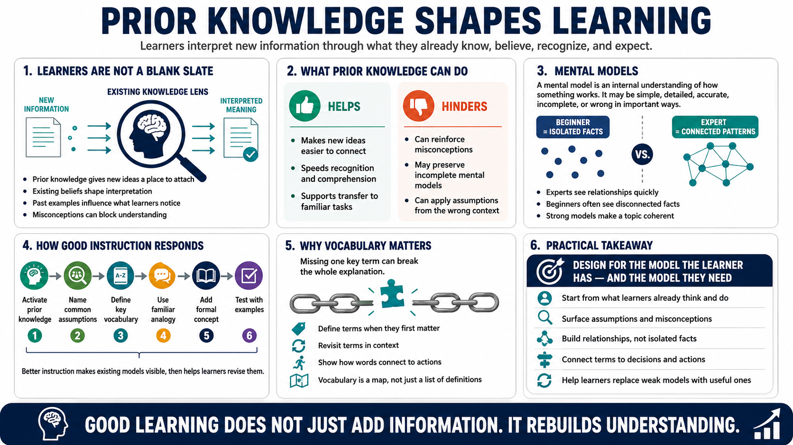

Prior Knowledge and Mental Models
Connecting to LMS... Progress: in progress

Narration
Learners do not receive new information as a blank slate. They interpret it through what they already know, what they believe, the vocabulary they recognize, and the examples they have seen before. Prior knowledge can help because it gives new ideas a place to attach. It can also get in the way when a learner has a misconception, an incomplete model, or an assumption that works in one context but fails in another.
A mental model is an internal understanding of how something works. It may be simple, detailed, accurate, incomplete, or wrong in important ways. Experts often have rich models that let them see patterns quickly. Beginners may see the same material as a list of isolated facts because they have not yet built the relationships that make the topic coherent. This is one reason an expert explanation can feel obvious to the expert and confusing to the learner.
Better instruction activates prior knowledge before adding complexity. That can be as simple as asking what learners already do, naming common assumptions, defining important vocabulary, or using a familiar analogy before introducing the formal concept. The goal is not to shame weak models. The goal is to make them visible, test them against examples, and help learners replace them with models that are more useful for the work they actually need to perform.
This is also why vocabulary matters. A learner who misses one key term may lose the thread of an entire explanation. Good courses define terms when they first matter, revisit them in context, and show how the terms relate to actions. The learner is not just collecting definitions. They are building a map that helps them navigate the subject.